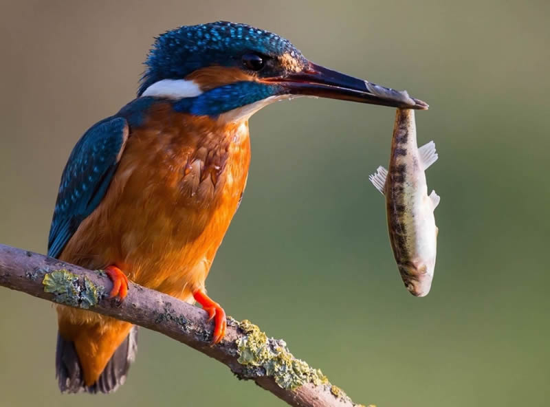

GALERIE



Leur mission
70-80 poissons par jours il est obligé de pêcher tous les jours son poids en poissons pour survivre
Leur beauté
Le martin-pêcheur se reconnaît facilement par ses belles couleurs bleu et orange ainsi que son bec droit taillé en forme de dague . Comme son nom le laisse entendre, l’oiseau piscivore est un pêcheur hors pair.
Taille : 13 cm Envergure : -Poids : 16 à 22 g